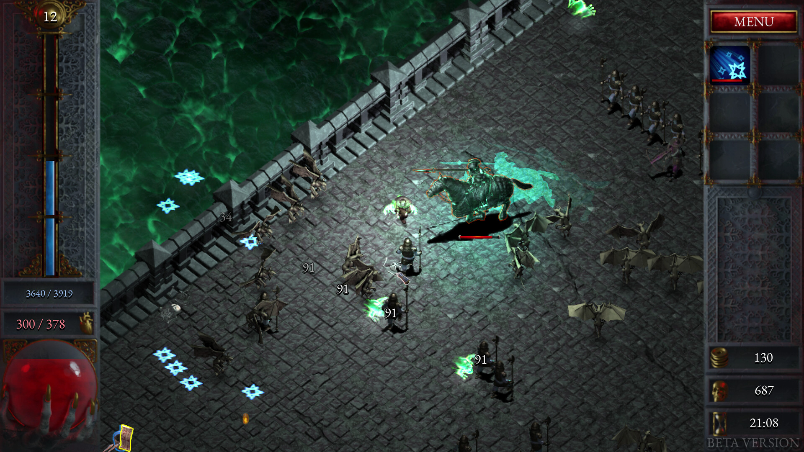

Very Fun Indie Game
Recently Released Indie Game Has Become One Of My Favorite Games
By Andrew Miracle Published 17 hours ago

This recent new wave-based indie game has caught my eye. I liked the graphics of the game so I decided to pick it up and start playing.
It reminds me a lot of Vampire Survivors which is another indie game I bought recently and enjoyed. My favorite part of Halls of torment
is that it has more customization compared to Vampire Survivors. You can not only constantly pick up skills but there is also gear to grind to get.

Halls of Torment is an ever-changing game. The developers are constantly adding new content despite being a small studio. They are working
very hard to compete with vampire survivors. They might accomplish it one day but since vampire survivors have been out for a while it will
take a lot more work to get people to come to play their game. They are constantly streaming the developers playing the game and discussing changes and new things they want to implement. The part of the game that makes me want to continue is all of the different
builds you can create from all the skills. You can modify every aspect of the class you are playing, including sub-abilities that makes it even more complex.